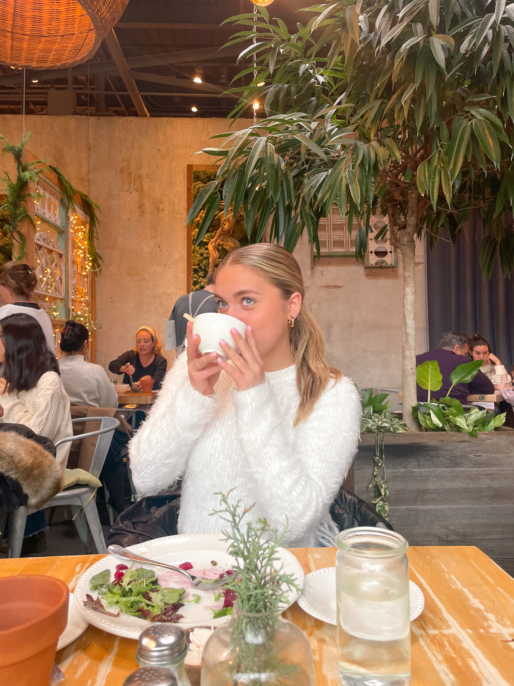

Lena Gunn is a sophomore at Elon University studying Strategic Communications and Media Analytics in the School of Communications, with a minor in Business Administration. Lena hopes to one day work in the sports or entertainment industry.
Lena is from Fairfield, Connecticut. She loves going to the beach, her dogs, and shopping. She grew up playng soccer, and here at Elon she is on the Women's Club Soccer team. Lena is also a memeber of the soroity Zeta Tau Alpha on campus. She has a passion for service and helping others. Lena loves to spend time with her family any chance she gets.

Lena wanted to bring her passion for sports into her professional life. At home she worked for a soccer organization. At this job she had many responsiblities such as coaching children, customer service and helping out with social media platforms. This job is where Lena realized that her passion for sports could turn into a career.